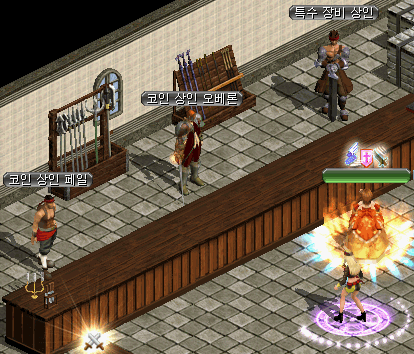

韓国 2016年4月14日アップデート
※韓国公式と韓国人プレイヤーから頂いた情報を基にしています。誤訳や韓国独自仕様の可能性もありますので、予めご了承下さい。2016年4月14日 韓国アップデートの変更内容一覧
インベントリ拡張
冒険団コイン商店アップグレード
ブラックファイヤー新クエスト
ブラックファイヤー装備強化システム
ブラックファイヤーユニークアイテム
ネットカフェ特典追加
「ランサー」「闘士」のPVP武器追加
白騎士/黒騎士コスチューム
インベントリ拡張
課金アイテム「魔法のリュックサック」を使って、追加インベントリのスロットを拡張することができます。
すでに既存のマジックバックを使用している場合は、追加インベントリにその分が適用されます。
 |
? 基本インベントリ ? 追加インベントリ |
※ アイテム購入/獲得時には、基本インベントリに優先的に入ります。
基本インベントリのスロットが満杯の場合に、追加インベントリに入ります。
ただし、水薬など重ね置き可能なアイテムが追加インベントリに存在する場合は、重ね置き可能個数を越えない限り、追加インベントリに重ね置きされます。
※ ベルトに装着した消耗品をリロードする時は、基本インベントリから消耗し、基本インベントリの該当アイテムがなくなった場合に、追加インベントリにあるアイテムを消耗していきます。
※ アイテムをドラッグ移動することで、基本インベントリと追加インベントリの間を移動させることができます。
冒険団コイン商店アップグレード
冒険家協会ブルンネンシュティグ本部のコイン商人ペルに冒険団コインを渡して商店の等級を上げると、購入できるアイテムの種類がアップグレードされるようになりました。

| 商店の等級 | アップグレード費用 |
|---|---|
| 1段階 | - |
| 2段階 | 冒険団コイン10個 |
| 3段階 | 冒険団コイン20個 |
| 商店の等級 | 購入できるアイテム | 必要な冒険団コイン | 備考 | |
|---|---|---|---|---|
| 1段階以上 | ミュータントフラワー10個 | 1個 | - | |
| 試練のクリスタル | 30個 | - | ||
| 不思議な紺碧の壺[取引不可] | 90個 | - | ||
| 2段階以上 | 神秘の通行用ポータルクリスタル | 2個 | 全ての秘密ダンジョン 共通で使用可能 |
|
| 恩寵の魔石10個 | 2個 | 恩寵効果が発動する | ||
| 3段階以上 | 異系の強化石 | 7個 | ブラックファイヤー 装備強化材料 |
|
| 真っ黒いランディスの手作り菓子 5個 |
1個 | HP回復 20％ CP回復 20％ |
||
ブラックファイヤー新クエスト
「反撃の開始」クエストをクリア後、他のクエストを受諾することができます。
報酬は、経験値と異系の強化石です。
| クエスト | 受諾場所 | 受諾可能レベル |
|---|---|---|
| 反撃の開始 | ブラックファイヤー外郭 ネルバ（8.154） |
Lv750〜1000 |
| ヴァンパイア討伐 | 漆黒の城 キラ（309.268） |
Lv775〜1000 |
| 犠牲者収拾 | ブラックファイヤー外郭 イレネ（14.147） |
Lv800〜1000 |
| 隠された目的 | 漆黒の城 イスン（339.270） |
Lv800〜1000 |
| 古代悪魔研究所 | ブラックファイヤー外郭 パル（30.147） |
Lv800〜1000 |
| 白馬討伐隊捜索 | ブラックファイヤー外郭 ユリシーズ（16.155） |
Lv800〜1000 |
ブラックファイヤー装備強化システム
「反撃の開始」クエストをクリア後、ブラックファイヤー外郭のネルバ（8.154）にて強化システムを利用することができます。
指輪・盾・刺青などの補助装備部位を除いたすべての装備アイテムに、最大1個のオプションを付加することができます。
強化するアイテムのオプションやNxアイテムの解放オプション、および要求Lvは変化せず、そのまま維持されます。
追加オプションがついたアイテムを、再び強化することもできます。
強化オプション自体に、アイテムコピー不可属性があります。
強化オプションは削除も可能です。
以下の材料を集めて、ネルバに異系の強化石を製作してもらいます。
異系の強化石1個を消費して、装備を強化することができます。
| 異系の強化石 製作材料 | |||
|---|---|---|---|
| - | ゴールド | 100万G | - |
| 神秘石 | 20個 | - | |
| 共鳴石 | 3個 | - | |
| 炎の石 | 1個 | - | |
| 深淵の黒曜石 | 10個 | ブラックファイヤー関連（8マップ）の モンスターからドロップ |
|
強化によって付加されたオプションは、等級により異なる色で表記されます。
オプションの等級と数値は、強化時にランダムで決定されます
| オプションの等級と表示色 | |||
|---|---|---|---|
| 下級 | 中級 | 上級 | 最上級 |
| 緑色 | 水色 | 黄金色 | オレンジ色 |

| <強化情報> 致命打確率 1％ 増加 |
<強化情報> 致命打確率 10％ 増加 |
 |
<強化情報> スキルレベル +3 |
強化時、ランダムで1個のオプションが追加されます。(成功確率100％)
同一オプションが部位別で2個以上ある場合、効果は最大2個まで重複します。
オプションと補正の一覧は ⇒ ブラックファイヤー装備強化オプション
さらに以下の課金アイテムを補助剤として使用することで、より効果的に強化することができます。
| アイテム | 説明 | 価格 | |
|---|---|---|---|
| 魔法が宿った鍛冶屋の 鉄床 |
等級が決定される確率が変化する強化補助剤。 | 3000ウォン | |
| 魔法が宿った鍛冶屋の 槌(限定版) |
すでに強化されたアイテムに使用すると、オプションの等級を維持したままオプション種類だけが変化する補助剤。 | - | |
| 魔法が宿った鍛冶屋の ピンセット(限定版) |
すでに強化されたアイテムに使用すると、オプション種類を維持したまま等級だけを変更する補助剤。 等級はランダムな確率で決定されるので、上がる場合も下がる場合もあります。 |
- | |
ブラックファイヤーユニークアイテム
Lv750以上のダンジョンでドロップする新ユニークアイテム（防具）17種類が追加されました。
| 首 | ||
|---|---|---|
| 国王の結び目 | ||
| <基本情報> 致命打 抵抗 +[45~50]％ 決定打 抵抗 +[45~50]％ 異能体相手時に防御力強化 +15％ 基礎能力値を15％上げる。 ダメージ +40％ CP獲得ボーナス 10％ 命中率 +10％ 力 +100 健康 +150 スキルレベル +4 |
||
| <要求能力値> レベル 775 力 250 |
<着用可能な職業> - |
|
| <説明> エリプトの国王サウロが使っていた戦争用のタイ。ヴァンパイアキラーというニックネームを付けられていた王だが、どうしたことかこの戦争用首保護帯にはメニトという血の文字が刻まれている。 ※ブラックファイヤーユニークは部位を問わず一個だけ着用できます。 |
||
| 八面頃 | ||
| <基本情報> すべてのスキルレベル +2 異能体相手時に防御力強化 +15％ 基礎能力値を15％上げる。 ダメージ +20％ 防御力 +25％ 敵に与えたダメージ 4％を 体力吸収 CP獲得ボーナス 15％ |
||
| <要求能力値> レベル 775 知恵 180 |
<着用可能な職業> - |
|
| <説明> 未来に去りなさい、君の意味を探そうとするなら。過去に耳を傾けなさい、君の憂いを探求するならば。現在を直視しなさい、君の幸福のために。 ※ブラックファイヤーユニークは部位を問わず一個だけ着用できます。 |
||
| ベルト | ||
| ヘクトの怨恨 | ||
| <基本情報> 防御力 +[23~25] スタックアイテム 15個 異能体相手時に防御力強化 +15％ 基礎能力値を15％上げる。 力 +250 健康 +250 防御力 +30 減少限界CP +2 神獣型キャラクターに追加で50％のダメージを与える。 |
||
| <要求能力値> レベル 775 力 450 |
<着用可能な職業> - |
|
| <説明> 国と民族、家族のために恐れを踏み越えて憤然と立ち上がった最高の騎士ヘクトを思って。 ※ブラックファイヤーユニークは部位を問わず一個だけ着用できます。 |
||
| ブルーミングコイル | ||
| <基本情報> 防御力 +[23~25] スタックアイテム 15個 異能体相手時に防御力強化 +15％ 基礎能力値を15％上げる。 防御力 +20 知識 +1/レベル 4 アンデッド型キャラクターに追加で30％のダメージを与える。 悪魔型キャラクターに追加で35％のダメージを与える。 ターゲットの闇抵抗を20％弱化させる。 闇ダメージ 150〜150 呪い 2秒 |
||
| <要求能力値> レベル 775 健康 450 |
<着用可能な職業> - |
|
| <説明> 花が咲く春には花で服を着飾って。すべての人が花の香りいっぱいに埋め尽くされて香しい気持ちになれるように。 ※ブラックファイヤーユニークは部位を問わず一個だけ着用できます。 |
||
| グローブ | ||
| げんこつ隊長 | ||
| <基本情報> 攻撃力 4~6 防御力 +[10~12] 異能体相手時に防御力強化 +15％ 基礎能力値を15％上げる。 敏捷 +40 ダメージ +65％ 風ダメージ 200〜300 スタン 7Frame 攻撃速度 +25％ 移動速度 +20％ 決定打発動確率 +10％ |
||
| <要求能力値> レベル 775 力 500 |
<着用可能な職業> - |
|
| <説明> 大きくて丈夫なげんこつ。 ※ブラックファイヤーユニークは部位を問わず一個だけ着用できます。 |
||
| バターフィンガー | ||
| <基本情報> 防御力 +[10~12] 異能体相手時に防御力強化 +15％ 基礎能力値を15％上げる。 最大CP +40％ CP獲得ボーナス 30％ 攻撃速度 +40％ |
||
| <要求能力値> レベル 775 知識 500 |
<着用可能な職業> - |
|
| <説明> バターのように香ばしくて甘い指。少しぬるぬるするが一度舐めれば問題ない。 ※ブラックファイヤーユニークは部位を問わず一個だけ着用できます。 |
||
| 兜 | ||
| カージナルトプト | ||
| <基本情報> 防御力 +[28~30] 致命打 抵抗 +[28~30]％ 異能体相手時に防御力強化 +15％ 基礎能力値を15％上げる。 最大ダメージ +25 ダメージ +25％ 致命打発動確率 +10％ ブロッキング速度 +50％ 最大HP +40％ 大地属性抵抗 +35％ |
||
| <要求能力値> レベル 775 力 300 敏捷 200 |
<着用可能な職業> |
|
| <説明> 兜のてっぺんにかかっているお酒が燃えるような赤色で威嚇的な兜。実際に手に触れても熱くはないが、まるで燃え上がるように飛び回って動いている。 ※ブラックファイヤーユニークは部位を問わず一個だけ着用できます。 |
||
| 女術士の頭巾 | ||
| <基本情報> 防御力 +[24~27] すべての状態異常 抵抗 +[24~27]％ 異能体相手時に防御力強化 +15％ 基礎能力値を15％上げる。 ターゲットの魔法抵抗を45％弱化させる。 知識 +100 |
||
| <要求能力値> レベル 775 カリスマ 450 |
<着用可能な職業> - |
|
| <説明> 漆黒のような頭巾は相手を恐怖に凍りつかせ、金色のサークレットは時に脅威を相殺するだろう。 ※ブラックファイヤーユニークは部位を問わず一個だけ着用できます。 |
||
| 鎧 | ||
| タイタンの肩 | ||
| <基本情報> 防御力 +[50~60] 異能体相手時に防御力強化 +15％ 基礎能力値を15％上げる。 ダメージ +20％ 攻撃速度 +15％ 防御力 +20 敏捷 +120 健康 +150 力 +1/レベル 2 |
||
| <要求能力値> レベル 775 力 400 健康 400 |
<着用可能な職業> - |
|
| <説明> 私は、人々が想像もできないものを見た。タイタン石肩で砲弾が降り注いだ攻撃船。タンホイザーゲートの闇で輝いた柱。その瞬間は…… ※ブラックファイヤーユニークは部位を問わず一個だけ着用できます。 |
||
| 色褪せた鎧 | ||
| <基本情報> 防御力 +[50~60] 異能体相手時に防御力強化 +15％ 基礎能力値を15％上げる。 防御力 +250％ カリスマ +365 知識 +250 防御力 +50 回避率 +7％ 魔法抵抗 +30％ |
||
| <要求能力値> レベル 775 健康 500 カリスマ 200 |
<着用可能な職業> - |
|
| <説明> 元々は銀色に輝く非常に美しい鎧だったという。今は歳月のためか誰かが表面のメッキをはがしたせいなのか、もしくは頻繁な戦闘で損傷を受けたからかは分からないが、若干黄金色に色褪せている。さらに胸充ての中央には何かを取り外した跡が残っている。 ※ブラックファイヤーユニークは部位を問わず一個だけ着用できます。 |
||
| アサックスの狂気 | ||
| <基本情報> 防御力 +[61~70] 異能体相手時に防御力強化 +15％ 基礎能力値を15％上げる。 防御力 +145％ 知識 +1/レベル 3 知恵 +1/レベル 4 スキルレベル +5 減少限界CP +50 最大CP +150％ |
||
| <要求能力値> レベル 775 健康 300 知恵 100 知識 200 |
<着用可能な職業> - |
|
| <説明> アサックスが魔女なのか聖女なのかに関しては意見が多様だ。レリノープ連盟建国の功臣で有名だが、第2次東西戦争である魔法戦争を起こした元凶としても知られているためだ。いずれにしてもアサックスが魔法を使う時は、その狂気が周囲にも及ぶ程強かったという。 ※ブラックファイヤーユニークは部位を問わず一個だけ着用できます。 |
||
| 足 | ||
| タオリンの手助け | ||
| <基本情報> 攻撃力 2~17 防御力 +[24~25] 異能体相手時に防御力強化 +15％ 基礎能力値を15％上げる。 命中率 +10％ 攻撃速度-5％ 移動速度-5％ 最大HP +30％ ダメージ +60％ 致命打発動確率 +25％ |
||
| <要求能力値> レベル 775 力 450 敏捷 320 |
<着用可能な職業> - |
|
| <説明> 必滅の存在である人間が土地に足を踏んばって生きていくのは非常に重要だ。人間の存在が大地と離れないようにタオリンが支えてくれるだろう。 ※ブラックファイヤーユニークは部位を問わず一個だけ着用できます。 |
||
| ペノンの壷 | ||
| <基本情報> 攻撃力 2~13 防御力 +[24~25] 異能体相手時に防御力強化 +15％ 基礎能力値を15％上げる。 ターゲットの魔法抵抗を15％弱化させる。 ターゲットの水抵抗を15％弱化させる。 水属性攻撃力を25％強化させる。 水属性抵抗 +40％ 水属性ダメージ吸収 25％ 移動速度 +20％ |
||
| <要求能力値> レベル 775 知識 450 カリスマ 200 |
<着用可能な職業> - |
|
| <説明> 十四種類のよく分からない模様が描き刻まれている半透明な壷形の靴。本来は小さな生命体を入れるために作られたようだ。 ※ブラックファイヤーユニークは部位を問わず一個だけ着用できます。 |
||
| マント | ||
| カタストロフィ | ||
| <基本情報> 火, 水, 風, 大地 抵抗 +[12~15]％ 異能体相手時に防御力強化 +15％ 基礎能力値を15％上げる。 ダメージ +10％ 防御力 +20％ 目くらまし攻撃 +2％(30秒) 力 +150 スキルレベル +3 |
||
| <要求能力値> レベル 775 力 300 敏捷 200 |
<着用可能な職業> 男性キャラクター専用 |
|
| <説明> ダメル大爆発を生き抜いたという特殊なマント。惜しくもマントの所持者は高熱と嵐に耐えることができなかったが、このマントだけが残って砂漠の砂の下に埋もれていたという。 ※ブラックファイヤーユニークは部位を問わず一個だけ着用できます。 |
||
| コンテンポラリーアルチザン | ||
| <基本情報> 火, 水, 風, 大地 抵抗 +[12~15]％ 異能体相手時に防御力強化 +15％ 基礎能力値を15％上げる。 魔法攻撃力を20％強化させる。 光属性攻撃力を15％強化させる。 風属性攻撃力を15％強化させる。 大地属性攻撃力を10％強化させる。 知識 +170 力 +200 |
||
| <要求能力値> レベル 775 知識 300 カリスマ 200 |
<着用可能な職業> 男性キャラクター専用 |
|
| <説明> 最近の技芸で最も重要な徳性が何か知っているかい？第一に独創性だね。一時は威力や安定性に囚われ過ぎた時期もあっただろう。幾多の術法者が氾濫する今、大衆にアピールできるのは'違い'一つだけなのだ！ ※ブラックファイヤーユニークは部位を問わず一個だけ着用できます。 |
||
| イヤリング | ||
| コピー特異点 | ||
| <基本情報> 集中力 +[10~30] 異能体相手時に防御力強化 +15％ 基礎能力値を15％上げる。 ターゲットの光抵抗を24％弱化させる。 力 +150 ダメージ +30％ 攻撃速度 +20％ 健康 +1/レベル 6 ターゲットの火抵抗を20％弱化させる。 |
||
| <要求能力値> レベル 775 力 300 敏捷 200 |
<着用可能な職業> 女性キャラクター専用 |
|
| <説明> 絶えず放出して絶えず吸い込む珍しい存在に対する報告書が存在する。この報告書を読んだ人々は帰ってくることができない一線を越えるという。 ※ブラックファイヤーユニークは部位を問わず一個だけ着用できます。 |
||
| 女神の匂い | ||
| <基本情報> 異常状態 抵抗 +[45~75]％ 異能体相手時に防御力強化 +15％ 基礎能力値を15％上げる。 最大HP +30％ 最大CP +20％ 攻撃速度 +20％ 集中力 +30％ 知識 +100 スキルレベル +3 |
||
| <要求能力値> レベル 775 知識 300 カリスマ 200 |
<着用可能な職業> 女性キャラクター専用 |
|
| <説明> 息の詰まるような清涼な女神の匂いはそれ自体が矛盾しているように感じられる。 ※ブラックファイヤーユニークは部位を問わず一個だけ着用できます。 |
||
ネットカフェ特典追加
「PCボタン」をクリックして「ネットカフェ特典」メニューを選択し、利用することができます。
・PC武器特典
職業とLvに応じたユニークアイテム武器を受け取ることができます。
有効期限24時間、ネットカフェでのみ使用可能。
レベルが上がったり武器を破壊した場合は、再度受け取ることができます。
・接続時間特典
ネットカフェに接続している時間により、合計4回特典箱が支給されます。
午前0時を基準に初期化され、一日一回ずつ受けることができます。

・PC武器特典 （剣士の場合）
| Lv | ユニークアイテム |
|---|---|
| 1〜199 | 薪割り斧[PC] |
| 200〜299 | アンドゥリル[PC] |
| 300〜399 | スパークセーバー[PC] |
| 400〜499 | ラヴァストーム[PC] |
| 500〜599 | チルドプロミネンス[PC] |
| 600〜699 | キャラバンアウトフィット[PC] |
| 700〜 | オプシディアンソード[PC] |
・接続時間特典
| ネットカフェ特典箱 | 丈夫なネットカフェ特典箱 | 光るネットカフェ特典箱 | |
|---|---|---|---|
| 接 続 時 間 |
30分 | 1時間 2時間 |
3時間 |
| 出 現 ア イ テ ム |
ランディスの手作り菓子 10個 ランディスの手作り菓子 5個 古代竜の心臓2個 古代竜の心臓 ミュータントフラワー15個 ミュータントフラワー30個 神秘石のかけら5個 発火石 断熱石 花火 ユニークアイテムチケット ファーストヒールポーション 風の羽 風の羽2個 |
神秘石 神秘石のかけら5個 修復済みタティリス遺跡の出土品 タティリス遺跡のかけら5個 ミュータントフラワー15個 ミュータントフラワー30個 古代竜の心臓 発火石 断熱石 花火 ユニークアイテムチケット 究極のユニークアイテムチケット ファーストヒールポーション 風の羽 風の羽2個 ランディスの手作り菓子 10個 ランディスの手作り菓子 5個 不思議な紺碧の壺 |
神秘石 神秘石のかけら10個 修復済みタティリス遺跡の出土品 タティリス遺跡のかけら10個 古代竜の心臓2個 ミュータントフラワー30個 古代竜の心臓 発火石 断熱石 花火 ユニークアイテムチケット 究極のユニークアイテムチケット 最高のユニークアイテムチケット 奇跡のユニークアイテムチケット ファーストヒールポーション 風の羽 風の羽2個 ランディスの手作り菓子 10個 ランディスの手作り菓子 20個 不思議な紺碧の壺 |
「ランサー」「闘士」のPVP武器追加
「ランサー」と「闘士」のPVP用新武器が実装されました。
| <基本情報> 攻撃力 68~78(1.00秒) 射程距離 170 決定打 +[0~1]％ ダメージ +190％ 敏捷 +80 水ダメージ 120〜180 コールド6Frame 闇ダメージ 66〜66 呪い 5秒 命中率 +30％ 人間型キャラクターに追加で220％のダメージを与える。 <要求能力値> レベル 631 力 176 敏捷 250 <着用可能な職業> ランサー ネクロマンサー |
<基本情報> 攻撃力 72~82(1.00秒) 射程距離 170 決定打 +[0~1]％ ダメージ +200％ 敏捷 +180 水ダメージ 420〜680 コールド6Frame 闇ダメージ 366〜466 呪い 5秒 命中率 +40% 人間型キャラクターに追加で220％のダメージを与える。 <錬成 オプション 情報> アイテム着用レベル -110 ダメージ +50％ 最終ダメージ +10％ ダブルクリティカルダメージ 10％ 増加 <要求能力値> レベル 631 力 176 敏捷 250 <着用可能な職業> ランサー ネクロマンサー |
| <基本情報> 攻撃力 63~73(0.75秒) 射程距離 60 決定打 +[0~1]％ ダメージ +230％ 運 +180 即死攻撃 +5％ 強打 +15％ 命中率 +5％ 人間型キャラクターに追加で210％のダメージを与える。 <要求能力値> レベル 631 力 176 敏捷 250 <着用可能な職業> ネクロマンサー 闘士 |
<基本情報> 攻撃力 65~75(0.75秒) 射程距離 60 決定打 +[0~1]％ ダメージ +230％ 運 +200 即死攻撃 +7％ 強打 +20％ 命中率 +8％ 人間型キャラクターに追加で210％のダメージを与える。 <錬成 オプション 情報> アイテム着用レベル -110 ダメージ +50％ 最終ダメージ +10％ ダブルクリティカルダメージ 10％ 増加 <要求能力値> レベル 631 力 176 敏捷 250 <着用可能な職業> ネクロマンサー 闘士 |
白騎士/黒騎士コスチューム
白騎士/黒騎士コスチュームが実装されました。